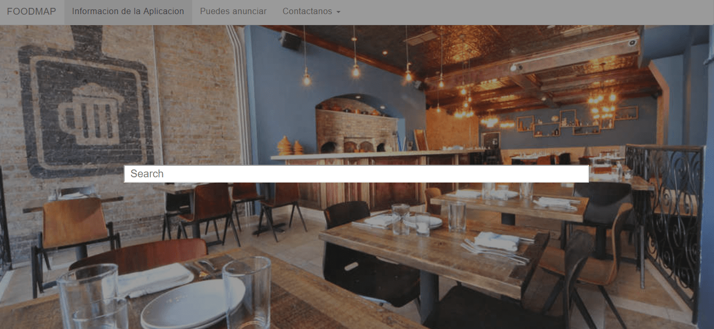

Card Title
FoodMap te permitir+a encontrar restaurantes en Surco y además te brinda informacón de como llegar a través de google maps.
 Cardify
Cardify
Cardify es unproyecto dirigido a developer, permite que los desarrolladores puedan optimizar sus galerias de fotos, conteniendo todas sus imagenes en un figure y brindando informacion a traves de un figcaption.
 CINELA
CINELA
Es una web de películas. A través de un buscador el usuario hallará informacion sobre su película favorita.